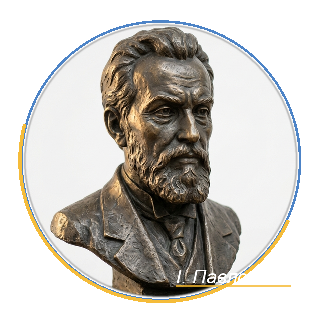

Про Ліцей №38
Комунальний заклад «Полтавський ліцей №38 імені Івана Павловського Полтавської міської ради» — простір успішних дітей, відкритих педагогів та щасливих родин.
Наша філософія
Наша візія
Ліцей успішних щасливих учнів, умотивованих кваліфікованих педагогів та відкритих до плідної співпраці батьків.
Наша місія та девіз
«Успішна дитина — щаслива родина». Ми створюємо умови, за яких кожен учень відчуває підтримку, розкриває свої таланти й вірить у власні сили.
Патрон закладу — Іван Францович Павловський

Іван Павловський
(1851 — 1922)Іван Францович Павловський — видатний український історик Полтавщини, архівіст, педагог, викладач Петровського Полтавського кадетського корпусу (1874–1913), ініціатор створення та перший завідувач музею Полтавської битви (1909–1918).
Виступав організатором народних читань та недільних шкіл на Полтавщині, є автором понад 150 наукових праць з історії краю XVIII–XIX століть. Будинок історика розташовувався неподалік теперішньої території ліцею. На фасаді нашого закладу відкрито меморіальну дошку в пам'ять про вченого.
Педагогічний колектив
9 методичних об'єднаньУ нашому ліцеї викладають 97 досвідчених учителів, серед яких учителі-методисти, старші вчителі та відмінники освіти. Навчальний процес координується фаховими кафедрами:
Офіційні реквізити та благодійність
Юридичні реквізити:
ЄДРПОУ: 22539573
Адреса: 36014, м. Полтава, вул. Юліана Матвійчука, 74
Телефон: (0532) 56-22-71
E-mail: poltava.school38@gmail.com
Благодійний розрахунковий рахунок:
IBAN: UA508201720314271013301184984
Банк: ДКСУ м. Київ
МФО: 820172
Призначення: Благодійний внесок на розвиток закладу